一文掌握六个空转数据库
原文：https://mp.weixin.qq.com/s?__biz=MzAwMzIzOTk5OQ==&mid=2247528665&idx=1&sn=8ffad122b0460ad3b057e6ebe6b9a257&chksm=9b3c0989ac4b809f21b250224f500c7b626abfda5f2e60d6038f4102761f55d4a4543a15ecd0#rd 合集：空间转录组
写在前面

在实际的空转分析，尤其是细胞注释环节中，我们需要依赖大量的文献/数据库来对结果进行参考、校验，此时空间转录数据库能够快速帮助我们找到合适的参考数据集/信息。此外，现存的很多空转数据库收集了大量可供挖掘的数据，也许你需要研究的样本与疾病已经被测过一轮啦，完全不用自己去花钱测序。本文，我们整理了六个空间转录数据库，相信能帮助大家节省很多时间。类似话题可见：
《一文学会单细胞实验标准数据库使用》、《一文掌握十个单细胞数据库》、《在TCGA数据库里挖呀挖呀挖》更多空转分析教程可见：《空间转录组学习手册合辑》、《一文搞定空间转录组与单细胞测序的整合分析》、《CellChat空转细胞通讯合辑》
数据库
1.STOmicsDB****
1.1简介 ：
由深圳国家基因库和华大生命科学研究院开发，整合了17个物种 的221个数据集 （包括人工处理数据），涵盖拟南芥、小鼠、猕猴等模式生物。
1.2功能模块 ：
该数据库包含Datasets （文献和样本搜索）、Submission （支持原始数据、注释文件等上传）、Collections （如ACSTA、MOSTA等合作开发的专题图谱）、Analysis （标准化流程、差异分析、细胞通讯等）四个模块。提供3D时空图谱（如果蝇胚胎Flysta3D）和200+TB数据存储。
（1）Datasets
这一页面是数据集汇总和查询情况，可以从时间段、物种层面、组织类型和测序技术、以及数据集质量来进行筛选，筛选后就会出现对应的文章以及数据相关信息。同时可以通过点击Summary看到数据集的详细介绍，点击Visualization进行数据的可视化，点击Data下载原始数据，点击Analysis results查看可视化后的数据。
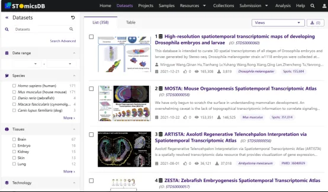
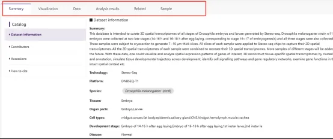
（2）Submission
可以提交你的空间转录组数据，包括原始测序数据，表达矩阵、以及分析结果等。
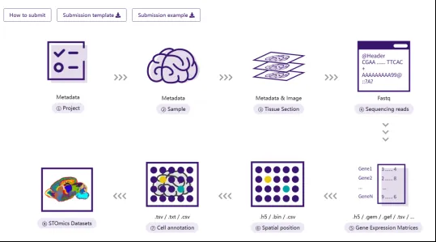
(3) Collections
这部分提供了9大特定数据库，比如MOSTA，小鼠器官发生的空间转录组图谱，除此之外还有斑马鱼、果蝇、拟南芥这几种模式生物胚胎或器官发育，以及蝾螈脑再生时空图谱、猕猴大脑皮层多组学细胞图谱等。
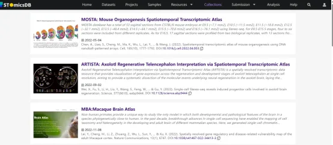
（4）Analysis
该模块构建了标准化数据分析流程，包括标准化处理、降维、聚类、细胞类型注释等，科研人员可通过数据集模块进行数据可视化探索。还提供 Gene search、Compare 和 Stereomap 等分析工具，帮助科研人员从多维度查看不同物种、不同发育阶段、不同疾病进程等的基因表达等数据差异。
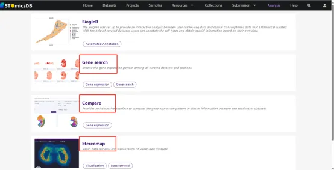
1.3访问链接
https://db.cngb.org/stomics/
1.4数据库 citation
Xu, Zhicheng et al. “STOmicsDB: a comprehensive database for spatial transcriptomics data sharing, analysis and visualization.” Nucleic acids research vol.
**2.**CROST
2.1简介 ：
综合性数据库，整合182个高质量数据集，覆盖8个物种 （如人、小鼠、斑马鱼）、35种组织和56种疾病的1033个样本 ，特别关注癌症研究。
2.2功能模块 ：
主要包括Browse 模块、Cancer SVG 模块、Explore 模块和Tools 模块****
（ 1）Browse
可从Datasets、Samples 和 Publication 三个层面检索数据，用户能依据不同平台、组织类型等进行筛选，查看项目详细信息及样本信息。
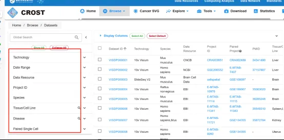
（2）Cancer SVG****
包含 48043 个肿瘤相关 SVGs，这些基因在不同癌症类型中显著富集，如肾癌、肝癌和黑色素瘤等。
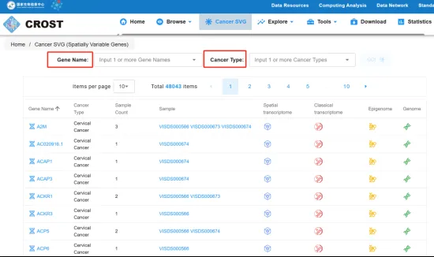
（3）Explore
用于数据的可视化展示以及细胞通讯、细胞类型共定位和相关性分析等。
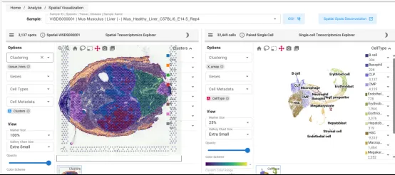
（4）Tools ****
提供了上述的 ssGSVA 和 SpatialAP 等分析工具。
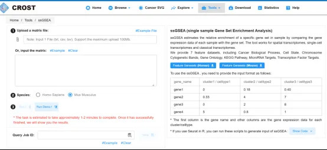
2.3访问链接
https://ngdc.cncb.ac.cn/crost/home
2.4数据库 citation
Wang, Guoliang et al. “CROST: a comprehensive repository of spatial transcriptomics.” Nucleic acids research vol. 52,D1 (2024): D882-D890. doi:10.1093/nar/gkad782
3. SPASCER
3.1简介 ：
从43个研究中收集了1082个 数据集，这些研究跨越了16个器官类型和4个物种（人，小鼠，鸡和斑马鱼）。注释了总共118种细胞类型 ，包括内皮、上皮、成纤维细胞和免疫细胞等，包括(i) 空间模型基因，(ii) 空间模型途径，(iii)基因调控网络，(iv) 细胞-细胞相互作用(v) 空间转录组学去卷积和相互作用。
3.2功能模块 ：
主要包括** Search模块、Download 模块、Statistics 模块和landscape** 模块。
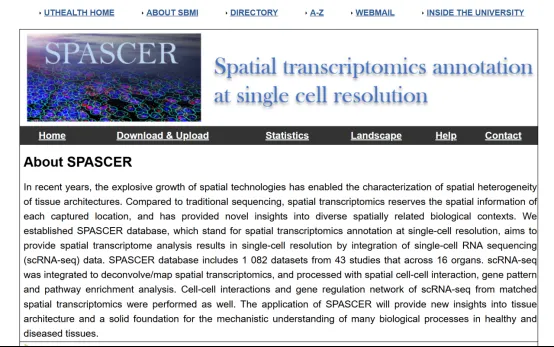
（1）Search
可通过输入感兴趣的 Gene symbol 或 Entrez gene ID 查询相关基因是否在特定组织中具有显著的空间分布特征，并链接到与该基因相关的数据集，查看单细胞转录组数据和空间转录组数据的分析结果。
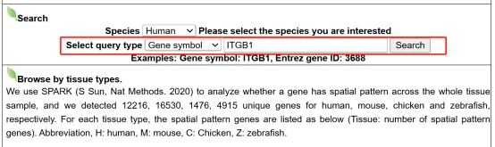
（2）Statistics
可点击感兴趣的组织，查看该组织包含的具有空间分布特征的基因，再通过基因链接查看该基因的基本信息、空间分布特征、参与的空间富集通路、细胞-细胞通讯网络、基因表达调控网络以及相关疾病及靶向药物信息。
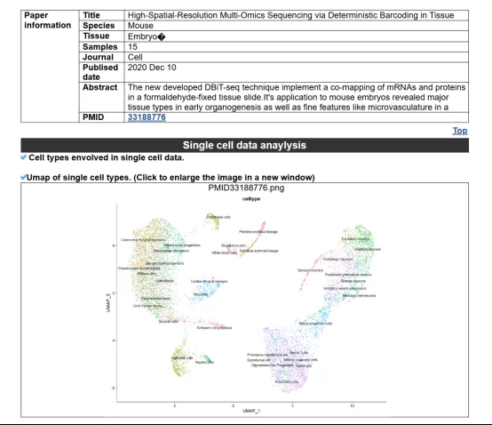
3.3访问链接
https://ccsm.uth.edu/SPASCER/
3.4**数据库 citation **
Fan, Zhiwei et al. “SPASCER: spatial transcriptomics annotation at single-cell resolution.” Nucleic acids research vol. 51,D1 (2023): D1138-D1149. doi:10.1093/nar/gkac889
- SpatialDB
4.1简介****
目前整合了 24个数据集，涵盖8种空间转录组技术，包括空间转录组学（Spatial Transcriptomics）、Slide-seq、LCM-seq、seqFISH、MERFISH等。数据集来源广泛，例如空间转录组学数据来自https://www.spatialtranscriptomicsresearch.org/，Slide-seq数据来自Broad研究所的单细胞存储库等。
4.2** 功能模块******
主要包括Browse 模块、Search 模块、Dataset 模块、Upload/Download 模块和Compare 模块。
（1）Browse****
在此页面点击相关技术，里侧区域显示相应的八种技术。外侧显示该技术对应的数据集及数据集相关信息。
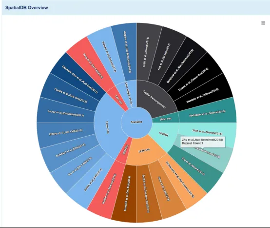
（2）Search****
可通过首页快速搜索或导航栏使用物种及基因名称 /ID作为条件，对目标基因进行搜索，即可获得数据集详情及所选样本中目标基因的空间表达谱。
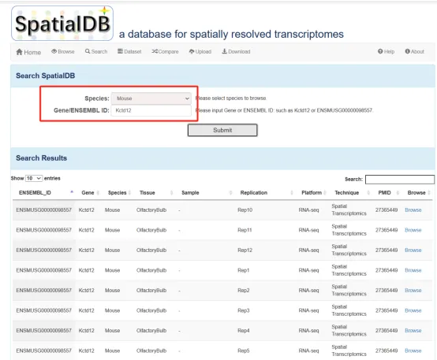
（3）Dateset****
在 Dataset页面，经技术筛选，得到技术相关的数据集列表，点击表格最后一列的detail，即可查看数据集详情和空间差异表达基因列表/功能富集分析；点击表格最后一列的browse可查看数据集详情及相关基因的空间表达信息。
（4）Compare****
数据库提供了两个网页来分别比较散点图 /热图和折线图。对于每个图表，用户可以输入目标基因、样本等信息，比较网页中的图表包含上述部分中提到的所有选项和属性。
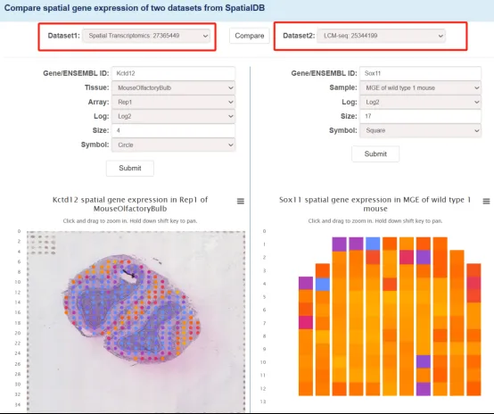
（5）Upload/Download****
可通过 Upload页面上传数据，通过Download页面下载所有数据。
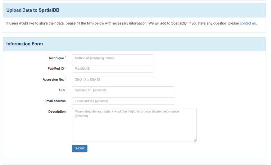
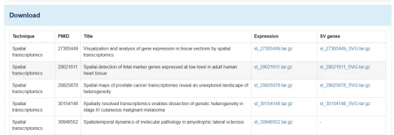
4.3访问链接
http://spatialomics.org/SpatialDB/index.php
4.4**数据库 citation **
Chen X., et al.LncVar: a database of genetic variation associated with long non-coding genes. Bioinformatics. 2017 Jan 1;33(1):112-118. doi: 10.1093/bioinformatics/btw581 . Epub 2016 Sep 6. PubMed PMID: 27605101.
Chen X., et al.LncVar: Deciphering Genetic Variations Associated with Long Noncoding Genes. Methods Mol Biol. 2019;1870:189-198. doi:10.1007/978-1-4939-8808-2_14 . PubMed PMID: 30539556.
5.Spatial Omics DataBase
5.1简介****
一个综合性空间组学数据库，由腾讯基因与空间计算实验室（ Tencent Gene and Spatial Computing Lab）开发，截至2025年，整合了多种类型的空间组学数据， 包含了来自七个不同物种的2000多个数据。
5.2 功能模块****
主要包括BROWSE 模块、SEARCH 模块、STATISTICS 模块和TUTORIAL 模块。
（1）BROWSE****
SODB可以根据树结构浏览或根据数据集属性进行搜索来有效地访问空间数据集，并提供了交互式数据探索，包括简单的检查（如鼠标悬停和选择感兴趣的细胞或组织）、自动统计（如用户选择区域内的细胞类型组成和表达值分布）和基本空间分析（如基因比较和空间可变基因分析）。
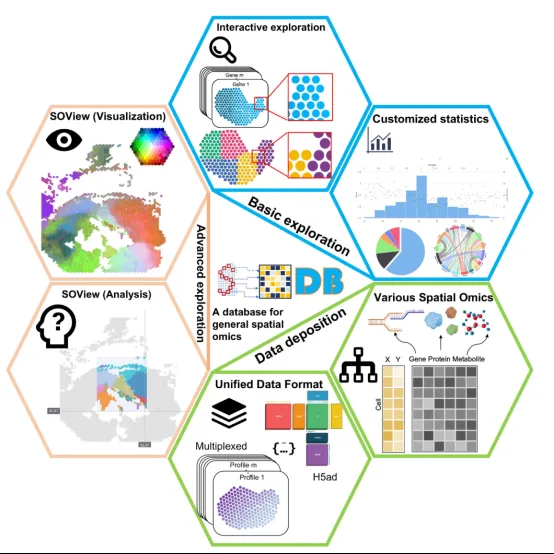
（2）SEARCH****
支持多种检索方式，如按组织、物种、生物技术、国家和期刊等进行数据搜索，提高数据查找效率。
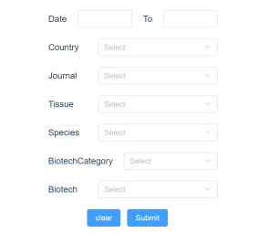
（3）STATISTICS
允许用户在自定义区域内进行数据统计，获取感兴趣区域的分子特征和表达信息。提供“颜色视图”空间可视化工具，将分子特征以颜色编码的方式映射到空间位置，直观展示分子的空间分布模式。提供4个数据探索视图，即表达式视图（Expression view）、注释视图（Annotation view）、比较视图（Comparison view）和SOView（Spatial Omics View）。
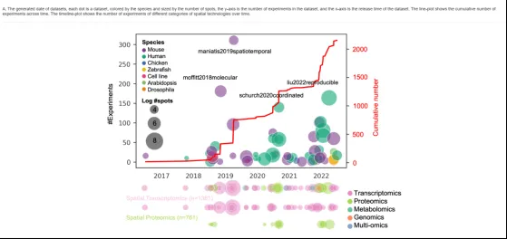
5.3访问链接
https://gene.ai.tencent.com/SpatialOmics/
5.4**数据库 citation **
Yuan, Z., Pan, W., Zhao, X. et al. SODB facilitates comprehensive exploration of spatial omics data. Nat Methods (2023). https://doi.org/10.1038/s41592-023-01773-7
6. CancerSRT
6.1简介
CancerSRT是一个专注于人类癌症空间转录组学研究的数据库，由 Yuying Huo 等研究人员开发。该数据库汇集、整理并分析了14种人类癌症的46个空间转录组数据集（共347个子集），数据集来源于5种不同的空间转录组学技术。
6.2 功能模块****
主要包括BROWSE 模块、SEARCH 模块、ANALYZE 模块和TUTORIAL 模块。
(1) SEARCH
用户可以在基因层次、细胞层次和癌症相关层次进行多维度的探索，深入了解癌症的分子机制和细胞行为。
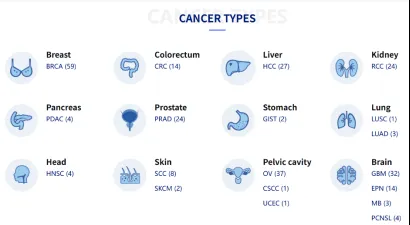
(2)ANALYZE****
提供在线分析工具，允许用户进行数据可视化、差异表达分析、功能富集分析等，满足不同研究需求。 用户可以在Visualization选项下查看样本细胞组成图谱，并进行图形调整，使数据更具可视化效果，直观展示癌症组织的细胞异质性和空间分布模式。
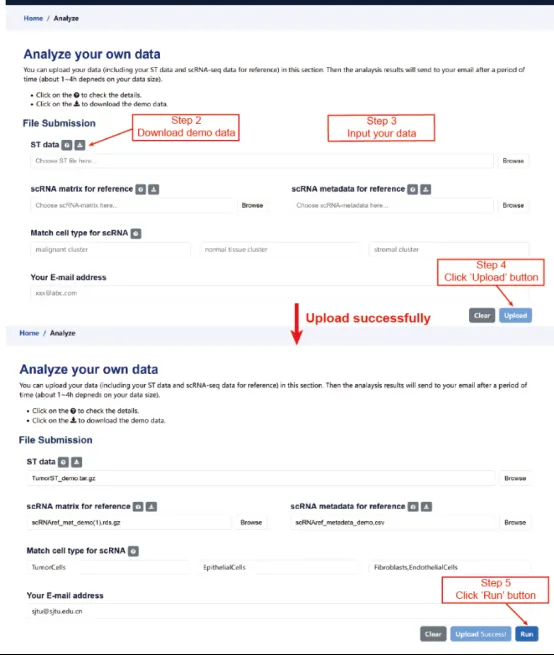
6.3访问链接
https://www.spatialtme.yelab.site/#!/
6.4数据库citation
Huo, Yuying et al. “CancerSRT: a spatially resolved transcriptomics database for human cancers.” Journal of genetics and genomics = Yi chuan xue bao vol. 51,12 (2024): 1505-1508. doi:10.1016/j.jgg.2024.08.012

如何联系我们

 留一个领取资料、免费两周学习版服务器的微信号[Biomamba_zhushou]，方便各位随时交流。同时我们也构建了交流群矩阵，欢迎大家入群讨论。
留一个领取资料、免费两周学习版服务器的微信号[Biomamba_zhushou]，方便各位随时交流。同时我们也构建了交流群矩阵，欢迎大家入群讨论。
大家可以阅读完这几篇之后添加给生信入门初学者的小贴士 如何搜索公众号过往发布内容
已有生信基地联系方式的同学无需重复添加

 您点的每个赞和在看，我都认真当成了喜欢
您点的每个赞和在看，我都认真当成了喜欢